1、液压传动是利用液体的（压力）能来传递能量的一种传动方式。其主要参数为（压力）和（流量）。
2、以（大气压力）为基准所表示的压力称为相对压力。
3、液体粘性用粘度表示,常用的粘度有（动力粘度）、（运动粘度）和条件粘度（或相对粘度)。
4、液体能量的表现有（压力能）、（位能/势能）和（动能）三种。
5、容积式液压泵是依靠（密封容积的变化）来进行工作的。
6、液压泵和液压马达的排量只随（几何尺寸）的变化而变化。
7、液压缸运动速度的大小决定于（进入液压缸的流量）。
8、减压阀常态时阀口常（开）。
9、油箱的功用有（储存油液）、（散发热量）、逸出气体和沉淀污物。
10、流体在管道中存在两种流动状态，（层流）时黏性力起主导作用，（湍流）时惯性力起主导作用，液体的流动状态可用（雷诺数/Re）来判断，其计算公式为（ ）。
11、改变单作用叶片泵转子和定子之间（偏心距）的大小可以改变其流量。
12、常用的液压泵有（齿轮）、（叶片）和（柱塞）三类。
13、调速阀是由（调速）和（节流）串联而成的。
14、若换向阀四个油口有钢印标记：“A”、“P”、“T”、“B”，其中（P）表示进油口，（T）表示回油口。
15、密封装置是解决（泄漏）最重要、最有效的手段。
16、（调压）回路的功用是使液压系统整体或部分的压力保持恒定或不超过某个数值。
17、液压传动系统由（动力）装置、（执行）装置、（控制）装置、（辅助）装置和工作介质组成。
18、根据度量基准的不同，压力有两种表示方法：绝对压力和（相对压力）。
19、静力学基本方程的表达形式为（p=p0+ρgh）。
20、在液压传动中，能量损失主要表现为（温升）。
21、为了防止产生（空穴）现象，液压泵吸油口距离油箱液面高度不宜太高。
22、执行元件是将液体的（压力）能转化成（机械）能的元件。
23、压力继电器是一种将油液的（压力）信号转换成（电）信号的电液控制元件。
24、液压传动是以（有压）流体为能源介质来实现各种机械传动与自动控制的学科。
25、液压系统的工作压力取决于（负载）。
26、O型密封圈一般由（耐油橡胶）制成，其横截面呈（圆形/0形）型。
27、在实验或生产实际中，常把零压差下的流量（即负载为零时泵的流量）视为（理论）流量。
28、液压泵的机械损失是指液压泵在（转矩）上的损失。
29、差动回路中，活塞直径为D，活塞杆直径为d，为使活塞快进和快退速度相等， D和d满足关系（）。
30、溢流阀的作用有（稳压）、（保护）和（背压/卸荷）等。
31、滤油器应满足的基本要求是（一定的过滤精度）和足够的过滤能力。
32、进油和回油节流调速系统的效率低，主要原因是（节流）损失和（溢流）损失。
33、顺序动作回路按控制方式不同分为（行程）控制和（压力）控制。
34、某液压系统的压力大于大气压力，则其绝对压力为（大气压力+相对压力）。
35、定常流动是指液体流动时液体中任一点处的（压力）、（密度）和速度不随时间而变化的流动。
36、由于液体具有（粘性），液体在管道中流动要损耗一部分能量。
37、外啮合齿轮泵位于轮齿脱开啮合一侧是（吸油）腔，位于轮齿进入啮合一侧是（压油）腔。
38、液压泵的功率损失包括（容积）损失和（机械）损失。
39、柱塞缸由于柱塞与缸筒无配合要求，所以它特别适用于行程（长/大）的场合。
40、液压缸的（容积）效率是液压缸的实际运动速度和理想运动速度之比。
41、画出三位四通换向阀P型中位机能的图形符号（
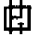
）。42、液压辅件包括管路、管接头、（油箱）、（过滤器）和蓄能器等。油箱/过滤器/密封件（写出两个即可）
43、液压传动可以方便地实现（无级）调速。
44、液压油的物理性质主要包括（密度）、（可压缩性）和（粘性）等。
45、液体在等直径管道中流动时，产生（沿程）损失；在变直径管、弯管中流动时，产生（局部）损失。
46、单作用叶片泵转子每转一周，完成吸、排油各（一）次，同一转速下，改变（偏心距）可改变其排量。
47、液压泵和液压马达的总效率都等于（容积效率）和（机械效率）的乘积。
48、摆动式液压缸可分为（单叶片）式和（双叶片）式两种。
49、过滤器在液压系统中的安装位置常有（液压泵进油口处）处、（液压泵出油口处）处和系统回油路上。
50、不可压缩液体做定常流动时，其续性方程数学式为（A1V1=A2V2）。它表示液体在流动过程中，其（质量）守恒。
51、齿轮泵中每一对齿完成一次啮合过程就排一次油，实际在这一过程中，压油腔容积的变化率每一瞬时是不均匀的，因此，会产生（流量脉动）。
52、轴向柱塞泵主要由驱动轴、斜盘、柱塞、缸体和配油盘五大部分组成,调节（斜盘）可以改变油泵的排量。
53、液压马达是将液体的（压力能）转换为（机械能）的执行装置。
54、溢流阀能使其（进油口）压力保持恒定，（定值）减压阀能使其（出油口）压力保持恒定。
55、气囊式蓄能器利用气体的（压缩）和（膨胀）来储存、释放压力能。
56、静压传递原理说：在密闭容器中，施加于液体上的压力将以（等值）同时传递到各点。
57、我国油液牌号是以（40）°C 时油液（运动）粘度的平均数来表示的。
58、理想液体伯努利方程的表达式：（p1/ρg+z1+u12/2g= p2/ρg+z2+u22/2Ga或p/ρ+zg+u2/2=常数）。
59、容积式液压泵的理论流量取决于液压泵的（排量）和转速。
60、在液压技术中，压力与流量的乘积即为（功率/P）。
61、设液压马达的排量为 V cm3 /r，进口处压力为p MPa，出口处压力为0，则其输出转矩为（）Nm。
62、工作行程很长的情况下，使用（柱塞）缸最合适。
63、实际工作时，溢流阀开口的大小是根据（进口压力）自动调整的。
64、（减压）阀是利用液流通过阀口缝隙产生压降的原理，使出口压力低于进口压力，并使出口压力保持基本不变的一种控制阀。
65、安装Y型密封圈时要将唇边面对（有压）的油腔。
66、在液流中，压力降低到有气泡形成的现象称为（空穴）现象。
67、油液粘度因温度升高而（降低），因压力增大而（增大）。
68、液压泵是把机械能转变为液体的（压力能）的能量转换装置。
69、液压执行元件包括液压缸和液压马达，其中（液压马达）输出旋转运动，（液压缸）输出直线运动。
70、蓄能器在安装时油口须（垂直向下）安装。
71、如果调速回路既要求效率高，又要求有良好的速度稳定性，则可采用（容积）调速回路。
72、液压传动能实现（无级）调速，且调速具有（调整范围大）等特点。
73、双作用叶片泵一般做成（定量）泵；单作用叶片泵可做成（变量）泵。
74、连续性方程表明在定常流动下，流过各个截面上的（流量）是相等的。
75、液压系统的故障大多数是由（工作介质污染）引起的。
76、对于液压泵来说，实际流量总是（小于）理论流量；实际输入扭矩总是（大于）其理论上所需要的
扭矩。
77、限制齿轮泵出口压力提高的主要因素是（径向受力不平衡）。
78、液压马达是（执行）元件，输入的是压力油，输出的是（转速）和（转矩）。
79、压力阀的共同点是利用作用在阀芯上的（液压力）和（弹簧力）相平衡的原理进行工作的。
80、工作介质在传动及控制中起传递（能量）和（信号）的作用。
81、由于流体具有（粘性），液体在管道中流动要损耗一部分能量。
82、液压缸是将（压力能） 能转变为（机械能）能，实现直线往复运动的液压元件。
83、溢流阀由（进口）压力控制阀芯开启，其阀口常（闭）。
84、油液中混入的空气气泡愈多，则油液的体积压缩系数 k愈（大）。
85、对额定压力为 25 × 10 5 Pa 的叶片泵进行性能试验，当泵输入（出）的油液直接通向油箱而管道阻力可以忽略不计时，泵的输出压力为（0）。
86、液压缸在低速运动时常发生周期性的停顿或跳跃运动，称为（爬行）。
87、活塞式液压缸分为（单杆）和（双杆）两种结构。
88、三位四通换向阀处于中位时，P、T、A、B四个油口全部封闭的称为（O）型机能；P、T口互通，
A、B两个油口封闭的称为（M）型机能。
89、液压传动的工作介质是（液压油），靠（有压液体）来传递能量。
90、将既无（粘性）又（不可压缩）的假想液体称为理想液体。
91、（动力粘度/μ）是表征液体流动时相邻液层间的内摩擦力的内摩擦系数。
92、高压系统宜选用（柱塞）泵。
93、在液压系统中采用钢管作油管时，中压以上用（无缝钢）管，低压用（有缝钢）管。
94、液压传动中最重要的参数是（压力）和（流量），它们的乘积是（功率）。
95、以大气压力为基准测得的压力是（相对压力），也称为（表压力）。
96、为了防止产生（气穴）现象，液压泵吸油口油箱液面高度不宜太高。
97、柱塞缸的运动速度v与缸筒内径D的关系（无）。
98、锥阀不产生泄漏，滑阀则由于（阀芯）和（阀体孔）有一定间隙，在压力作用下要产生泄漏。
99、油箱的有效容量指油面高度为油箱高度的（80%）时油箱内所储存油液的容积。
100、（橡胶软管）比硬管安装方便，还可以吸收振动。
1、以下（C）不能用于描述工作介质的性质。
A．粘性 B．可压缩性 C．惯性 D．稳定性
2、以下（B）不是液压泵吸油口真空度的组成部分。
A．把油液提升到一定高度所需的压力 B．大气压力
C．产生一定流速所需的压力 D．吸油管内压力损失
3、液压泵单位时间内排出油液的体积称为泵的流量。泵在额定压力下的输出流量称为（C）；在没有泄漏的情况下，根据泵的几何尺寸及其转速计算而得到的流量称为（B）。
A．实际流量 B．理论流量 C．额定流量 D．排量
4、在液压传动系统中，一般认为根据（D）传递动力。
A．牛顿液体内摩擦定律 B．阿基米德定律
C．查理定律 D．帕斯卡原理
5、一水平放置双杆液压缸，采用三位四通电磁换向阀，要求阀处于中位时，液压泵卸荷，且液压缸浮动，其中位机能应选用（D）；要求阀处于中位时，液压泵卸荷，液压缸闭锁不动，其中位机能应选用（B）。
A．O型； B．M型； C．Y型； D．H型；
6、当节流阀的开口一定，进、出油口的压力相等时，通过节流阀的流量为（A）。
A．0 B．某调定值 C．泵额定流量 D．无法判断
7、下面哪一项不是溢流阀的功用（C）。
A．用作安全阀 B．用作背压阀 C．用作顺序阀 D．用作卸荷阀
8、以下（C）不是蓄能器的功用。
A．作辅助动力源 B．作应急油源 C．提高系统效率 D．为系统保压
9、连续性方程是（A）在流体力学中的表现形式。
A．质量守恒定律 B．动量定理 C．能量守恒定律 D．牛顿内摩擦定律
10、伯努利方程是（C）在流体力学中的表现形式。
A．质量守恒定律 B．动量定理 C．能量守恒定律 D．牛顿内摩擦定律
11、工作介质的选择包括（B）两个方面。
A．压力和粘度 B．品种和粘度 C．密度和粘度 D．压力和密度
12、下面哪一种情况不是液压冲击造成的后果（A）。
A．困油现象 B．引起振动 C．引起噪声 D．损坏密封装置和管道
13、下面哪一种措施不能降低液压泵的噪声（A）。
A．在泵的出口安装蓄能器 B．在两侧端盖上开卸荷槽
C．在配油盘吸、压油窗口开三角形阻尼槽 D．油箱上的电机和泵使用橡胶垫
14、选择液压泵时，在负载大、功率大的场合往往选择（C）。
A．齿轮泵 B．叶片泵 C．柱塞泵 D．双联泵
15、液压缸是将液体的压力能转换为（B）的能量转换装置。
A．动能 B．机械能 C．位能 D．热能
16、液压缸有效面积一定时，其活塞运动的速度由（B）来决定。
A．压力 B．流量 C．排量 D．负载
17、大流量液压系统使用的换向阀一般是（C）。
A．手动换向阀 B．机动换向阀 C．电液换向阀 D．电磁换向阀
18、在普通液压系统中，液压泵进油口处一般采用（A）。
A．网式过滤器 B．线隙式过滤器 C．纸质过滤器 D．吸附性过滤器
19、液压系统中执行元件短时间停止运动可采用（C），以达到节省动力损耗，减少液压系统发热，延长泵的使用寿命。
A．减压回路 B．保压回路 C．卸荷回路 D．平衡回路
20、液压系统中压力表所指示的压力为（B）。
A．绝对压力 B．相对压力 C．大气压力 D．真空度
21、以下（C）不是进入油液的固体污染物的主要根源。
A．残留污染 B．被污染的新油 C．困油现象 D．浸入污染
22、液压泵是用来将（C）能量转换液体的压力能的能量转换装置。
A．动能 B．位能 C．机械能 D．热能
23、下面（A）对双作用叶片泵的描述是不正确的。
A．改变偏心可以改变其排量 B．密闭空间数（即叶片数）是偶数
C．是卸荷式叶片泵 D．流量脉动率很小
24、已知单杆活塞液压缸两腔有效面积A1=2A2，泵供油流量为q，若将液压缸差动连接，活塞快进，则进入液压缸无杆腔的流量是（B）；如果不差动连接，则小腔的排油流量是（A）。
A．0.5q B．1.5q C．1.75q D．2q
25、直动型溢流阀一般用于（A）。
A．低压系统 B．中压系统 C．高压系统 D．超高压系统
26、纸质过滤器的滤芯一般都做成折叠形，其目的是为了（C）。
A．提高过滤精度 B．增强滤芯强度 C．增大过滤面积 D．方便安装
27、液压传动是依靠液体的（C）来传递能量的。
A．动能 B．位能 C．压力能 D．机械能
28、工作介质在传动及控制中起传递（B）的作用。
A．能量和信号 B．压力和流量 C．推力和速度 D．振动和噪声
29、在用节流阀的旁路节流调速回路中，其液压缸速度（B）。
A．随负载增加而增加 B．随负载减少而增加
C．不受负载的影响 D．随负载减少而减少
30、为了使齿轮泵连续供油，要求其啮合系数（B）。
A．等于1 B．大于1 C．小于1 D．大于0
31、高压系统宜采用（C）。
A．齿轮泵 B．叶片泵 C．柱塞泵 D．螺杆泵
32、、双出杆液压缸，采用缸筒固定安装方式时，工作台的移动范围为缸筒有效行程的（C）。
A．4倍 B．3倍 C．2倍 D．1倍
33、液压马达的输出是（C）。
A．压力和流量 B．压力和转速 C．扭矩和转速 D．扭矩和流量
34、以下（B）对减压阀的描述是不正确的。
A．阀口常开 B．可用作背压阀 C．保持出口压力恒定 D．出口处压力控制阀芯
35、以下（D）不属于液压辅助元件。
A．O型圈 B．过滤器 C．蓄能器 D．压力继电器
36、旁路调速回路适用于（B）的场合。
A．高速轻载 B．高速重载 C．低速轻载 D．低速重载
37、理想液体是一种假想液体，它（A）。
A．无粘性，不可压缩 B．无粘性，可压缩 C．有粘性，不可压缩 D．有粘性，可压缩
38、液体沿等直径直管流动时所产生的压力损失，称为（B）。
A．功率损失 B．沿程压力损失 C．效率损失 D．局部压力损失
39、在压差作用下，通过缝隙的流量与缝隙值的（D）成正比。
A．一次方 B．1/2次方 C．二次方 D．三次方
40、液压泵是通过密封容积的变化来吸油和压油的，故称为（A）。
A．容积泵 B．离心泵 C．真空泵 D．转子泵
41、液压缸的缸体与缸盖用半环连接适合（D）缸筒。
A．锻造 B．铝制型材 C．铸造 D．无缝钢管
42、溢流阀没有（C）功能。
A．溢流稳压 B．过载保护 C．减压 D．背压
43、调速阀一般由定差减压阀和（B）串联组成。
A．溢流阀 B．节流阀 C．顺序阀 D．单向阀
44、下面（A）不是液压系统中采用的管材。
A．铝管 B．铜管 C．钢管 D．橡胶管
45、反应灵敏、应用广泛的蓄能器是（B）。
A．活塞式 B．气囊式 C．重锤式 D．弹簧式
46、当两个或两个以上的液压缸，在运动中要求保持相同的位移或速度时，应采用（C）。
A．调压回路 B．调速回路 C．同步回路 D．方向控制回路
47、液压传动中，工作介质不起（A）的作用。
A．产生压力 B．传递动力 C．传递速度 D．润滑液压元件
48、液压缸的运动速度取决于（B）。
A．压力和流量 B．流量 C．压力 D．负载
49、液压泵能够实现吸油和压油，是由于泵的（C）周期变化。
A．动能 B．压力能 C．密封容积 D．流动方向
50、选择液压泵的类型时，从结构复杂程度、自吸能力、抗污染能力和价格方面比较，最好的是（A）。
A．齿轮泵 B．单作用叶片泵 C．双作用叶片泵 D．柱塞泵
51、对柱塞缸描述不正确的是（B）。
A．单作用液压缸 B．双作用液压缸 C．适用于长行程 D．输出推力与缸筒内径无关
52、为了避免活塞在行程两端撞击缸盖，一般液压缸设有（D）。
A．导向装置 B．排气装置 C．密封装置 D．缓冲装置
53、方向控制阀包括（C）。
A．单向阀和节流阀 B．换向阀和节流阀
C．单向阀和换向阀 D．节流阀和液控单向阀
54、调速阀可使流量不随（B）变化而变化。
A．进口压力 B．负载 C．温度 D．通流面积
55、一般油箱中的液面高度为油箱高度的（C）。
A．60％ B．70％ C．80％ D．90％
56、用同样定量泵、节流阀、溢流阀和液压缸组成下列几种节流调速回路，（B）能够承受负值负载。
A．进油口节流调速回路 B．出油口节流调速回路
C．旁路节流调速回路 D．以上都可以
57、在液压油的牌号中，采用液压油在（C）时运动粘度的平均值来标号。
A．20°C B．30°C C．40°C D．50°C
58、液压泵中总效率较高的一般是（D）。
A．齿轮泵 B．叶片泵 C．变量泵 D．柱塞泵
59、关于双作用叶片泵描述不正确的是（A）。
A．是变量泵 B．将叶片顺着转子回转方向前倾一个角度
C．在配油盘的压油窗口靠叶片从吸油区进入密封区的一边开三角槽 D．转子和定子是同心的
60、对减压阀不正确的描述是（C）。
A．有定值减压阀、定差减压阀和定比减压阀
B．液压系统一般采用定值减压阀
C．减压阀的作用是实现顺序动作
D．减压阀在回路中是并联的
61、尼龙管目前大多在（A）管道中使用。
A．低压 B．中压 C．高压 D．超高压
62、蓄能器的主要功用是（B）。
A．储存液压泵的油液 B．储存油液的压力能
C．释放油液 D．吸收系统中泄漏的油液
63、在定量泵供油的液压系统中，采用出口节流调速，溢流阀在执行元件工作进给时，其阀口是（B）
的，液压泵的工作压力取决于溢流阀的调整压力且基本保持恒定。
A．关闭 B．打开 C．不确定 D．无法判断
65、（B）叶片泵运转时，存在不平衡的径向力。
A．双作用 B．单作用 C．多作用 D．容积式
66、对液压油不正确的要求是（C）。
A．合适的粘度 B．良好的润滑性 C．较低的闪点 D．较低的凝固点
67、高速液压马达的转速大于（C）。
A．300r/min B．400r/min C．500r/min D．600r/min
68、在工作原理上，所有的阀都是通过改变（A）的相对位置来控制和调节液流的压力、流量及流
动方向的。
A．阀芯与阀体 B．阀体与阀盖 C．阀芯与阀盖 D．阀芯与弹簧
69、下面哪一个功用不属于油箱的功用（C）。
A．储存油液 B．散发热量 C．保持压力 D．逸出气体
70、当用一个液压泵驱动的几个执行件需要按一定顺序依次工作时，应采用（B）。
A．方向控制回路 B．顺序控制回路 C．调速回路 D．保压回路
71、没有量纲的物理量是（C）。
A．动力粘度 B．运动粘度 C．恩氏粘度 D．内摩擦力
72、下面哪一种不是控制工作介质污染的措施（C）。
A．控制工作介质的温度 B．严格清洗元件和系统
C．给系统设置排气装置 D．定期检查和更换工作介质
73、直轴式轴向柱塞泵中，既不旋转又不往复运动的零件是（A）。
A．斜盘 B．柱塞 C．滑履 D．缸体
74、压力继电器是将（B）转变成电信号的转换装置。
A．速度信号 B．压力信号 C．力信号 D．温度信号
75、在定量泵节流阀调速回路中，调速阀可以安装在回路的（D）上。
A．进油路 B．回油路 C．旁油路 D．以上都正确
76、普通液压油的品种代号为（A）。
A．HL B．HM C．HV D．HG
77、理想液体的伯努利方程中没有（C）。
A．动能 B．位能 C．热能 D．压力能
78、限压式变量叶片泵能借助输出（B）的大小自动改变偏心距e来改变输出流量。
A．流量 B．压力 C．功率 D．转矩
79、液压泵在正常工作条件下，按试验标准规定连续运转的最高压力称为（B）。
A．工作压力 B．额定压力 C．最高允许压力 D．极限压力
80、在双杆活塞缸中，活塞直径为0.18m，活塞杆直径为0.04m，当进入液压缸的流量为
4.16×10－4m3/s时，往复运动速度为（A）m /s。
A．1.72×10－2 B．1.63×10－2 C．1.52×10－2 D．1.32×10－2
81、以下哪个不属于液压缸的组成部分（D）。
A．缸筒 B．活塞 C．防尘圈 D．阀芯
82、下面（C）对液控单向阀的描述是正确的。
A．允许油液反方向流动 B．可以双向自由流动
C．控制油口有压力油时允许油液倒流 D．以上说法都不正确
83、中位时可以使液压缸锁紧、液压泵卸荷的是（B）中位机能。
A．H型 B．M型 C．O型 D．P型
84、相对粘度又称为（D）。
A．动力粘度 B．运动粘度 C．绝对粘度 D．条件粘度
85、管接头必须在强度足够的条件下能在振动、压力冲击下保持管路的（D）。
A．联结性 B．流动性 C．可靠性 D．密封性
86、对单作用叶片泵描述不正确的是（B）。
A．非平衡式叶片泵 B．对油液的污染不敏感 C．改变偏心可以改变排量 D．变量泵
87、在液压缸中应用广泛的是（A）。
A．活塞缸 B．柱塞缸 C．摆动缸 D．组合缸
88、广泛应用的换向阀操作方式是（D）。
A．手动 B．机动 C．液动 D．电磁铁
89、下面哪一项不是对密封装置的要求（C）。
A．摩擦力稳定 B．抗腐蚀性好 C．良好的润滑性 D．良好的密封性
90、泵在单位时间内由其密封容积的几何尺寸变化计算而得的排出液体的体积称为（C）。
A．实际流量 B．公称流量 C．理论流量 D．排量
91、可实现差动连接的液压缸是（B）。
A．等直径双杆活塞式液压缸 B．单杆活塞式液压缸
C．柱塞式液压缸 D．摆动式液压缸
92、流量控制阀是通过调节阀口的（A）来改变通过阀口的流量。
A．通流面积 B．阀口形状 C．温度 D．压力差
93、顺序阀的主要功用是（D）。
A．定压、溢流、过载保护 B．背压、远程控制
C．降低系统压力为低压执行件供油 D．利用压力变化控制油路的通断
94、气囊式蓄能器中采用的气体是（D）。
A．空气 B．氧气 C．氢气 D．氮气
95、不需要滤芯芯架的是（A）过虑器。
A．烧结式 B．线隙式 C．网式 D．纸芯式
96、下列调速方案中，（C）的功率损失较小。
A．节流阀进油节流调速 B．节流阀回油节流调速
C．节流阀旁路节流调速 D．调速阀回油节流调速
97、液压系统的额定工作压力为10MPa，安全阀的调定压力应为（D）。
A．0 B．等于10MPa C．小于10MPa D．大于10Mpa
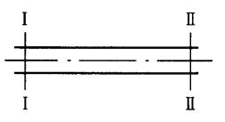
98、图示直水管中，其中截面Ⅰ处的压力是1MPa，截面Ⅱ处的压力是0.5 MPa，据此知直水管中的流动方向是（A）。
A．水由截面Ⅰ流向截面Ⅱ
B．水由截面Ⅱ流向截面Ⅰ
C．水是静止的
D．水由截面Ⅰ流向截面Ⅱ，又由水由截面Ⅱ流向截面Ⅰ往复循环
99、液压泵实际输出压力称为（B）。
A．最大压力 B．工作压力 C．公称压力 D．额定压力
100、液压马达的理论流量（B）实际流量。
A．大于 B．小于 C．等于 D．以上都不正确
101、下列液压阀中不能作背压阀使用的是（A）。
A．减压阀 B．溢流阀 C．节流阀 D．单向阀
102、为了便于检修，蓄能器与管路之间应安装（D）。
A．减压阀 B．顺序阀 C．节流阀 D．单向阀
103、适合安装在液压泵进油口的过滤器是（A）过滤器。
A．网式 B．纸质 C．烧结 D．蛇形管式
104、用同样定量泵、节流阀、溢流阀和液压缸组成下列几种节流调速回路，（C）的速度刚性最差而回路效率最高。
A．进油口节流调速回路 B．出油口节流调速回路
C．旁路节流调速回路 D．以上都可以
105、差动连接的液压缸可使活塞实现（D）。
A．减速 B．加速 C．慢速 D．快速
106、动量方程是（B）在流体力学中的表现形式。
A．质量守恒定律 B．动量定理 C．能量守恒定律 D．牛顿内摩擦定律
1、理想液体就是指不可压缩又作定常流动的液体。（Ｘ）
2、高压软管比硬管安装方便，还可以吸收振动。（√）
3、液体只有在流动是才呈现粘性。（√）
4、静止液体内任一点的静压力在各个方向上都相等。（√）
5、液压传动适宜于远距离传输。（Ｘ）
6、液压传动适宜于传动比要求严格的场合。（Ｘ）
7、液压传动装置工作平稳，能方便地实现无级调速。（√）
8、采用调速阀的定量泵节流调速回路，能保证负载变化时执行元件运动速度稳定。（√）
9、液压传动能实现过载保护。（√）
10、不可压缩液体作定常流动时，通过流管任一通流截面的流量是相等的。（√）
11、液体的体积模量越大，则液体抵抗压缩能力越强。（√）
12、在高温、易燃、易爆的工作场合，为安全起见应在系统中使用合成型和石油型液压油。（Ｘ）
13、沿程压力损失与液体的流速有关，而与液体的黏度无关。（Ｘ）
14、液体在不等横截面的管道中流动时，液流速度和液体压力与横截面积的大小成正比。（Ｘ）
15、旁油路节流调速回路，只有节流功率损失，没有溢流功率损失。（√）
16、液体中任何一点的密度、压力、速度都不随时间变化的流动称为恒定流动。（√）
17、液流的连续性方程表明在定常流动下，流过各个截面上的流量是相等的。（√）
18、压力和功率是液压传动的两个重要参数，其乘积为流量。（Ｘ）
19、定量泵与变量马达组成的容积调速回路中，其输出转矩恒定不变。（Ｘ）
20、选择液压油时主要考虑油液的密度。（Ｘ）
21、绝对压力是以大气压为基准表示的压力。（Ｘ）
22、液体在外力作用下流动时会产生一种内摩擦力，这一特性称为液体的粘性。（√）
23、液体在不等横截面管道中流动时，其速度与横截面积的大小成反比。（√）
24、连续性方程是能量守恒定律在流体力学中的一种表现形式。（Ｘ）
25、雷诺数是判断层流和湍流的依据。（√）
26、伯努利方程是能量守恒定律在流体力学中的表现形式。（√）
27、用压力表测得的压力就是绝对压力。（Ｘ）
28、在液压系统中能量的损失主要表现为温升。（Ｘ）
29、油液的粘温特性显示，油液的粘度与温度无关。（Ｘ）
30、液体在变径管中流动时，其管道截面积越小，则流速越高，而压力越小。（√）
31、液压系统工作时，液压阀突然关闭或运动部件迅速制动，常会引起液压冲击。（√）
32、当液流实际流动时的雷诺数小于其临界雷诺数时，则其流动状态为紊流。（Ｘ）
33、定量泵是指排量不可改变的液压泵。（√）
34、在齿轮泵中，为了消除困油现象，可在泵的端盖上开卸荷槽。（√）
35、液压系统的工作压力数值是指其绝对压力值。（Ｘ）
36、采用顺序阀的顺序动作回路适用于液压缸数目多、阻力变化小的场合。（Ｘ）
37、流经细长小孔的流量与液体的流速有关，而与液体的黏度无关。（Ｘ）
38、气穴现象多发生在阀口和液压泵的出口处。（Ｘ）
39、Y型密封圈在装配时要将唇边面对有压力的油腔。（√）
40、液压泵的排量愈小，转速愈低，则泵的容积效率也愈低。（Ｘ）
41、当液压泵的进、出口压力差为零时，泵输出的流量即为理论流量。（√）
42、作用于活塞的推力越大，活塞运动的速度就越快。（Ｘ）
43、液压缸差动连接时，液压缸产生的推力比非差动连接时的作用力大。（Ｘ）
44、差动式液压缸往返速度相等时，缸筒内径和活塞杆直径的关系是。（√）
45、液压泵的理论流量取决于泵的有关几何尺寸和转速，而与泵的工作压力无关。（√）
46、液压泵的工作压力不仅取决于外负载和管路的压力损失，还与液压泵的流量有关。（Ｘ）
47、由于存在泄漏，所以液压泵的实际流量大于它的理论流量。（Ｘ）
48、齿轮泵径向间隙引起的泄漏量最大。（Ｘ）
49、液压泵都可以正反转的。（Ｘ）
50、液压泵的实际输出流量随排油压力的提高而增大。（Ｘ）
51、流量可以改变的液压泵称为变量泵。（√）
52、定量泵是指输出流量不随输出压力改变的液压泵。（Ｘ）
53、保压回路可用于防止倾斜布置的液压缸和与之相连的工作部件因自重而下落。（√）
54、改变双作用叶片泵的偏心可以改变其排量。（Ｘ）
55、液压泵的工作压力等于额定压力。（Ｘ）
56、在液压系统的噪声中，液压泵的噪声占有很大的比重。（√）
57、斜轴式轴向柱塞泵是通过调节斜盘的倾角来调节排量的。（√）
58、限压式变量叶片泵能借助输出压力的变化自动改变偏心量的大小来改变输出流量。（√）
59、液压缸活塞运动的速度与负载无关，而是取决于流量。（√）
60、齿轮泵存在三个可能泄漏的部位，其中对泄漏影响最大的是齿端面与端盖间的轴向间隙。（√）
61、缓冲装置的作用是排除混入液压缸中的气体，保证液压缸运动平稳。（Ｘ）
62、换向阀是借助阀芯和阀体之间的相对移动来控制油路的通断，或改变油液的方向，从而控制执行
元件的运动方向。（√）
63、当双作用叶片泵的负载压力降低时，泄漏减小，其排量增大。（Ｘ）
64、尼龙管和塑料管一般用作回油管和泄油管。（√）
65、齿轮泵的浮动侧板是用来消除齿轮泵的困油现象的。（Ｘ）
66、双作用叶片泵的流量是可以改变的，所以它是一种变量泵。（Ｘ）
67、液压执行元件包括液压马达和液压缸。（√）
68、低速液压马达的基本型式是径向柱塞马达，其特点是排量大、体积大、转速低。（√）
69、电液换向阀由电磁换向阀和液动换向阀组成，多用于大流量系统。（√）
70、轴向柱塞泵的柱塞数越多，其流量脉动就越小，且柱塞数为偶数比为奇数时要小。（Ｘ）
71、压力继电器是把油液的压力信号转换成电信号的一种元件。（√）
72、液压泵的工作压力取决于外负载和排油管路上的压力损失，与液压泵的流量无关。（√）
73、单杆活塞缸差动连接可以提高活塞的运动速度，并使其输出推力增大。（Ｘ）
74、背压阀的作用是使液压缸的回油腔具有一定压力，保证运动部件工作平稳。（√）
75、对于叶片式液压马达，其叶片应径向安装。（√）
76、作用于液压缸活塞上的推力越大，活塞运动速度越快。（Ｘ）
77、单杆活塞液压缸差动连接可实现快速进给。（√）
78、装有排气装置的液压缸，只需打开排气装置即可排尽液压缸中的空气。（Ｘ）
79、在输入相同流量的情况下，供油压力愈高，则液压缸的运动速度愈快。（Ｘ）
80、因液控单向阀关闭时密封性能好，故常用于保压回路和锁紧回路。（√）
81、变量泵与定量马达构成的容积调速回路，其调速特点是恒转矩调速。（√）
82、单向阀、顺序阀和溢流阀均可以用作背压阀。（√）
83、液压执行元件的功能是将压力能转换成机械能。（√）
84、“M”型中位机能的三位四通换向阀，中位时可使泵保压。（Ｘ）
85、单杆活塞式液压缸的往复速度相等。（Ｘ）
86、外控顺序阀利用外部控制油的压力来控制其阀芯的移动。（√）
87、当缸体较长时，缸孔内壁的精加工较困难，宜采用柱塞缸。（√）
88、由于存在泄漏，所以马达的实际输入流量小于它的理论流量。（Ｘ）
89、调速阀由顺序阀和节流阀串联组成。（Ｘ）
90、因存在泄漏，因此输入液压马达的实际流量大于其理论流量。（√）
91、单向顺序阀可以作平衡阀用。（√）
92、先导型溢流阀不可以用作卸荷阀。（Ｘ）
93、油箱内壁要涂刷油漆，以防止油箱被液压油腐蚀。（√）
94、液压缸排气装置有排气塞和排气阀两种。（√）
95、油箱在液压系统中的功用就是储存液压系统所需的足够油液。（Ｘ）
96、蓄能器在安装时油口须水平放置。（Ｘ）
97、三位四通换向阀处中位时，P、T、A三个油口互通，B口封闭称为M型机能。（Ｘ）
98、液控单向阀与普通单向阀一样，允许油液沿一个方向流动，不允许反向倒流。（Ｘ）
99、塑料和橡胶都是液压系统高压软管采用的材料。（Ｘ）
100、通过节流阀的流量与其通流截面积成正比，与阀口两端的压力差大小无关。（Ｘ）
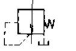 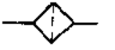 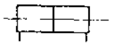 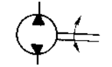
名称 双向定量泵 名称 双杆活塞缸 名称 过滤器 名称 减压阀
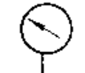 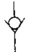 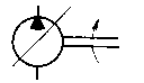 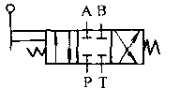
名称三位四通手动换向阀 名称 单向变量泵 名称 普通单向阀 名称 压力表
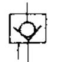 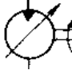 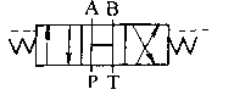
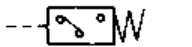
名称 压力继电器 名称三位四通液控换向阀 名称 单向变量马达 名称 液控单向阀
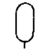
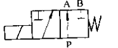 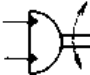 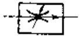
名称 蓄能器 名称 调速阀 名称 二位三通电磁换向阀 名称 摆动缸
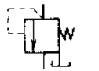 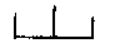 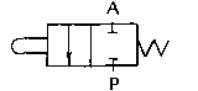 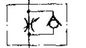
名称 单向节流阀 名称 二位二通行程阀/机动阀 名称 油箱 名称 顺序阀
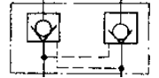 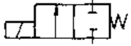 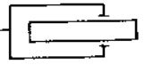
名称 柱塞缸 名称 二位二通电磁换向阀 名称 液压锁
22、试画出普通单向阀、顺序阀和压力继电器的图形符号。
1、什么是“双联泵”?
答：双联泵是由两个单级叶片泵装在一个泵体内在油路上并联组成的液压泵。
2、为什么称单作用叶片泵为非卸荷式叶片泵？
答：单作用叶片泵转子每转一周，每个油腔吸油一次压油一次，其吸油腔和压油腔各占一侧，使转子和转子轴所受径向力不平衡，故称其为非卸荷式叶片泵。
3、什么是真空度？
答：如果液体中某点处的绝对压力小于大气压力，这时该点的绝对压力比大气压力小的那部分压力值，称为真空度。
4、绘图说明绝对压力、相对压力、真空度三者的关系。
解：绝对压力、相对压力、真空度三者的关系：
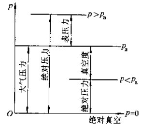
5、什么是换向阀的中位机能?
答：三位换向阀阀芯在中位时各油口的连通情况称为换向阀的中位机能。
6、为什么调速阀能使执行元件的速度稳定?
答：调速阀由节流阀和减压阀组合而成，当系统负载发生变化时，减压阀可以对节流阀阀口前后的压力差进行调节，使节流阀阀口前后的压力差始终保持不变，稳定通过节流阀阀口的流量，从而保证了执行元件的速度稳定。
7、什么是液压基本回路？
答：液压基本回路就是能够完成某种特定控制功能的液压元件和管道的组合。
8、蓄能器有哪些用途?
答：①用作辅助动力源和应急动力源；②保持系统压力；③吸收流量脉动，缓和压力冲击，降低噪声。
10、什么是变量泵？
答：排量可以改变的液压泵称为变量泵。
11、背压回路与平衡回路有何区别？（4分）
答：背压回路的目的在于提高液压执行元件的运动平稳性，适用于任何形式布局的液压执行元件；平衡回路主要适用于垂直或倾斜布置的液压执行元件，以防止运动部件因自重而下落。
9、写出理想液体的伯努利方程，并说明它的物理意义。
答：
意义：理想液体作定常流动时，也六种任意截面处液体的总水头由压水水头、位置水头和速度水头组成，三者之间可互相转化，但总和不变。
12、什么是平衡式液压泵？
答：径向受力平衡的液压泵称为平衡式液压泵。
13、液压缸的作用是什么?有哪些常用的类型?
答：液压缸的作用是把液压系统的压力能转化成机械能来做功。
常用的液压缸有：活塞缸、柱塞缸等。
14、什么是“困油现象”？
答：液压油处在液压泵困油区（闭死空间）中，需要排油时无处可排，需要补充油液时又无法补充，这种现象叫做“困油现象”。
15、什么是“容积调速回路”？
答：通过改变液压泵排量来改变其输出流量，或改变液压马达的排量进行
变速得的调速回路就是容积调速回路。
16、液压缸为什么需要密封？哪些部位需要密封？
答：为防止液压缸内高压腔向低压腔泄漏、防止液压缸内部向外部泄漏，以提高液压缸的容积效率，所以必须对液压缸需要密封处采取相应的密封措施。
液压缸中需要密封的地方有：活塞与缸筒之间、活塞与活塞杆之间、活塞杆与缸盖之间、缸筒与缸盖之间。
17、什么是“节流调速回路”？
答：定量泵供油系统，用流量控制阀改变输入执行元件流量实现调速的回路称为节流调速回路。
18、什么是“液压冲击现象”？
答：在液压系统中，由于某种原因而引起油液的压力在瞬间急剧升高，形成较大的压力峰值，这种现象就做液压冲击。
19、选用虑油器时应考虑哪些问题?
答：①过滤精度满足要求；②具有足够的通流能力；③滤芯要有足够的强度；④滤芯抗腐蚀性好；⑤滤芯清洗方便。
20、什么是“非平衡式液压泵”？
答：非平衡式液压泵即径向受力不平衡的液压泵。
21、密封装置应满足哪些基本要求?
答：①在一定的压力和温度范围内有良好的密封性；
②摩擦系数小，摩擦力稳定；
③抗腐蚀性好；
④成本低。
22、什么是“空穴现象”？
答：液压系统中由于流速突然变大，压力迅速下降至低于空气分离压时，原先溶于油液中的空气游离出来形成气泡夹杂在油液中形成气穴的现象。
23、卸荷回路的作用是什么？常见的卸荷回路有哪三种？哪几种换向阀可在中位时使泵卸荷？
答：卸荷回路的作用是在液压泵驱动电机不频繁启闭的情况下，使液压泵在功率损耗接近零的情况下运转，以减少功率损耗，降低系统发热，延长液压泵和电机的寿命。
常见的卸荷回路有：①用换向阀的卸荷回路②在先导型溢流阀远控口接二位二通阀③直接并联二位二通阀。
M、K、H三种。
24、什么是“局部压力损失”？
答：液体流经如阀口、弯道、通流截面变化等局部阻力处所引起的压力损失即为局部压力损失。
25、为什么先导型溢流阀适用于高压系统?
答：先导型溢流阀由主阀和导阀组成，导阀的作用是控制主阀的溢流压力，主阀的作用是溢流。由于主阀弹簧很软，即使系统压力很高、溢流量很大时，弹簧力变化也不大，因而调压偏差小，压力波动较小。故先导型溢流阀适用于中高压系统。
26、为什么直动型溢流阀适用于低压系统?
答：直动型溢流阀由主阀芯受液压力与弹簧力直接平衡来控制溢流口的启闭和开口大小，当流过溢流口的流量变化时被控制的压力将出现波动，系统压力越高则压力波动越大，系统压力低则压力波动小，故直动型溢流阀适合用于低压系统。
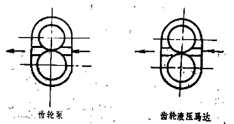
27、在下图中标出齿轮液压泵、齿轮液压马达中齿轮的转动方向。答：液压泵：上方齿轮逆时针旋转，下方齿轮顺时针旋转；
液压马达：上方齿轮顺时针旋转，下方齿轮逆时针旋转。
28、如图所示为溢流阀的几种应用，试指出图中溢流阀在各种回路中的具体作用。
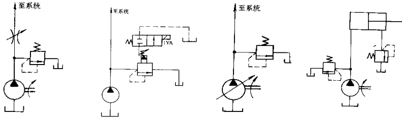
a) b) c) d)
答：a）起溢流稳压的作用； b）起卸荷阀的作用； c）起安全保护的作用； d）起背压阀的作用。
29、如图所示，若阀1的调定压力4MPa，阀2的调定压力2MPa，试回答下列问题：
（1）阀1是 阀，阀2是 阀；
（2）当液压缸空载运动时，A点的压力值为 、B点的压力值为 ；
（3）当液压缸运动至终点碰到挡块时，A点的压力值为 、B点的压力值为 。
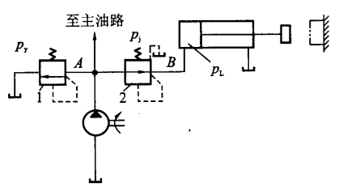
答：（1）溢流阀、减压阀 （2）0、0 （3）4MPa、2MPa
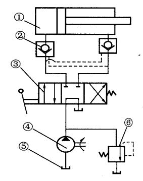
30、分析如图所示液压系统，试回答下列问题：（1）指出元件名称：元件① ；
元件② ；
元件③ ；
元件④ 。
（2）该系统由 回路、 回路、 回路
和 回路组成。
答：（1）① 活塞缸 ② 液控单向阀 ③ 三位四通手动换向阀（M型）
④ 单向定量泵
（2）调压、卸荷、锁紧、换向
31、已知液压泵的额定压力和额定流量，若不计管道内压力损失，试指出图示各种工况下液压泵出口
处的工作压力值。
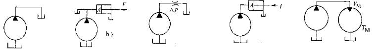
a) b) c) d) e)
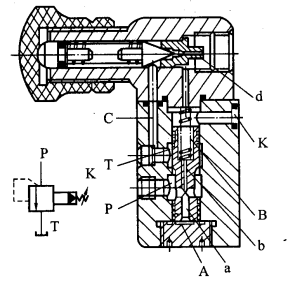
答：a）； b）8. 试分析图示回路在下列情况下，泵的最高出口压力（各阀的调定压力注在阀的一侧）：
（1）全部电磁铁断电；
（2）电磁铁2Y通电，1Y断电；
（3）电磁铁2Y断电，1Y通电。
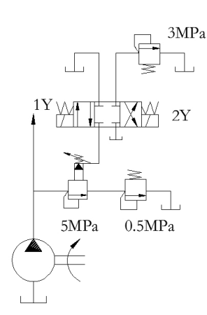
答：（1）全部电磁铁断电，；
（2）电磁铁2Y通电，1Y断电，；
（3）电磁铁2Y断电，1Y通电，
32、先导式溢流阀原理如图所示，回答下列问题：
（1）先导式溢流阀由哪两部分组成？
（2）何处为调压部分？如何调节？
（3）阻尼孔的作用是什么？
（4）主阀弹簧为什么可以较软？
答：（1）导阀和主阀 （2）导阀手柄调节弹簧压缩量 （3）产生压力降 （4）因为主阀芯上下腔压力差克服弹簧力开启阀芯
33、图示为轴向柱塞泵和柱塞液压马达的
工作原理图，转子按图示方向旋转，
(1)作液压泵时，配油盘安装位置
为 。 口进油， 口出油；
(2)作液压马达时，配油盘安装位置
为 。 口进油， 口出
油。
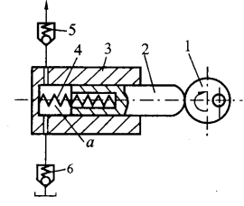
答：(1) A-Aa、a、b ；(2) A-Ab、c、d。34、图示为容积式液压泵工作原理图，试说明其工作必须满足的基本条件是什么？并指出元件4、5和6在其工作中的作用是什么？
答：基本条件：具有若干密封且可周期变化的空间；油箱内液面的绝对压力必须恒等于或大于大气压；具有相应的配流机构。
4－压缩弹簧，保证柱塞始终与偏心轮工作表面接触。
5、6－单向阀，配流阀，保证高压腔与低压腔不互通。
35、图a)所示，己知两液压缸I、Ⅱ并联，缸I的活塞面积为Al，缸Ⅱ的活塞面积为A2。巳知Al＜A2，两缸的负载相同。试问当输入压力油时哪个液压缸先运动？为什么？图b)所示，已知A1＝A2，F1＞F2，试问当输入压力油时，哪个液压缸先运动? 为什么？
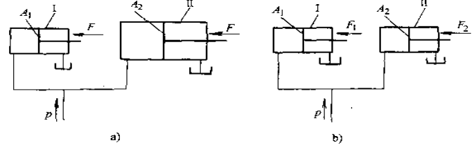
答：a）Ⅱ缸先运动；负载相同时面积大者推力大，所以先动。
b）Ⅱ缸先运动；面积相同时负载小者先动。
36、图示叶片泵铭牌参数为q＝18L/min，p＝6.3MPa，设活塞直径D＝90mm，活塞杆直径d＝60mm，
在不计损失且F＝28000N时，试求在图示（a）、（b）、（c）情况下压力表读数是多少？（p2＝2 MPa，
要求列出算式）（6分）
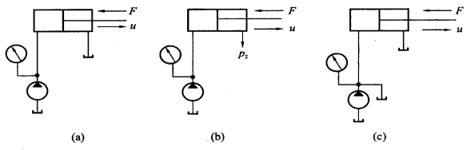
(a)
（b）
（c）
答：（a）
（b）
（c）
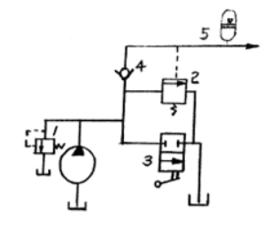
37、图示为一卸荷回路，试问液压元件1、2、3、4、5名称是什么？元件1名称：
元件2名称：
元件3名称：
元件4名称：
元件5名称：
答：直动型溢流阀、外控顺序阀、二位二通手动方向阀、普通单向阀、蓄能器
38、图示叶片泵铭牌参数为q＝18L/min，p＝6.3MPa，设活塞直径D＝90mm，活塞杆直径d＝60mm，在不计损失且F＝28000N时，试求在图示（a）、（b）、（c）情况下压力表读数是多少？（p2＝2 MPa，要求列出算式）
（a）
（b）
（c）
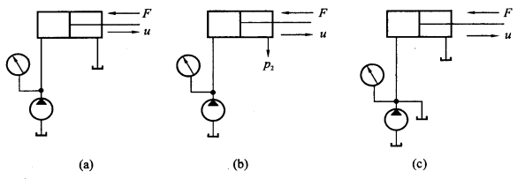
解： (a)MPa
(b) MPa
(c) 
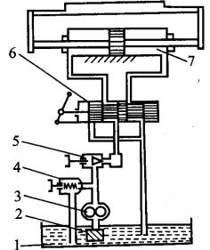
39、根据图示系统说明图中哪些是液压传动的动力元件、执行元件、辅助元件和控制元件。动力元件：
执行元件：
辅助元件：
控制元件：
解：动力元件：3 ；
执行元件：7 ；
辅助元件：1、2 ；
控制元件；4、5、6。
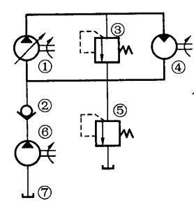
40、分析如图所示系统，试回答下列问题：（1）说明元件名称：元件① ；
元件② ；
元件④ ；
元件⑤ ；
元件⑥ ；
元件⑦ 。
（2）该系统的形式为 ，该系统由 回路、
回路和 回路组成。
答：（1）①单向变量泵②普通单向阀④单向定量液压马达⑤直动型溢流阀⑥单向定量泵⑦油箱。
（2）闭式回路， 调压、调速、过载保护。
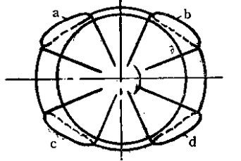
41、图示为叶片泵和叶片式液压马达的工作原理图。转子按图示方向旋转，当作液压泵时， 为进油口 为出油口；当作液压马达时， 为进油口 为出油口。解：b、c；a、d；b、c；a、d；
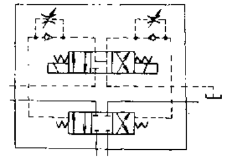
42、说出图示元件的正确名称,并在图中各油路端口标出正确的字母代号。（8分）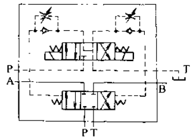
答：该元件元件是： 电液换向阀（2分）。1、己知a)、b)所示回路参数相同，两液压缸无杆腔面积，负载 FL＝10000N，各液压缸的调定压力如图所示，试分别确定两回路在活塞运动时和活塞运动到终点停止时A、B两处的压力。
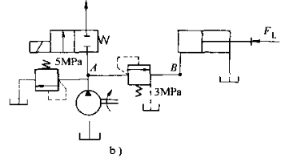 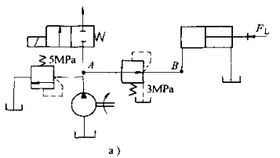
a）运 动 时： b）运 动 时：
终点停止时： 终点停止时：
解：
a）运动中： ；
；
运动到终点停止时： ；
；
b）运动中：；（应为Pa＝3.0Mpa，Pb＝2.0Mpa）
运动到终点停止时：
2、图示为轴向柱塞泵和柱塞液压马达的工作原理图，转子（即缸体）按图示方向旋转，(1)作泵时，配油盘安装位置为 图所示，其中 表示吸油口， 表示压油口；(2)作马达时，配油盘安装位置为 图所示，其中 表示进油口， 表示出油口。
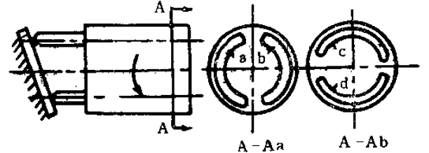
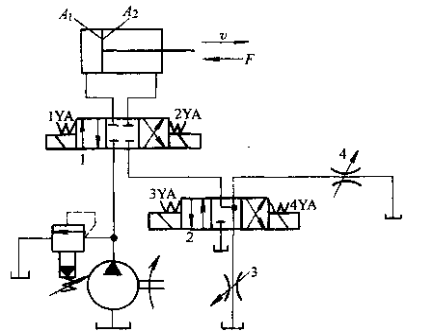
解：(1) A-Aa、a、b ；(2) A-Ab、c、d。
3、某液压系统如图示，液压缸动作循环为“快进→一工进→二工进→快退→停止”，一工进速度大于二工进速度。试分析该系统，并填写电磁铁动作顺序表（通电“＋”，失电“－”）。
解： 电磁铁动作顺序表
1YA | 2YA | 3YA | 4YA | |
快 进 | + | ― | + | ― |
一工进 | + | ― | ― | ― |
二工进 | + | ― | ― | + |
快 退 | ― | + | + | ― |
停 止 | ― | ― | ― | ― |
4、如图a)所示，己知两液压缸I、Ⅱ并联，缸I的活塞面积为Al，缸Ⅱ的活塞面积为A2，巳知Al＜A2，两缸的负载相同。试问当输入压力油时哪个液压缸先运动？为什么？如图b)所示，已知A1＝A2，F1＞F2，试问当输入压力油时，哪个液压缸先运动?为什么？
答：a）Ⅱ缸先运动；负载相同时面积大者推力大，所以先动。
b）Ⅱ缸先运动；面积相同时负载小者先动。
5、图示三种形式的液压缸，活塞和活塞杆直径分别为D、d，如进入液压缸的流量为q，压力为p，试分析三种情况液压缸输出的推力和运动方向。
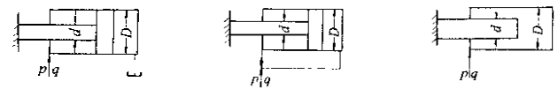
a) b) c)
输出推力： 输出推力： 输出推力：
运动方向： 运动方向： 运动方向：
答：a) ，向左移动；b) ，向右移动；c)  ，向右移动。
，向右移动。
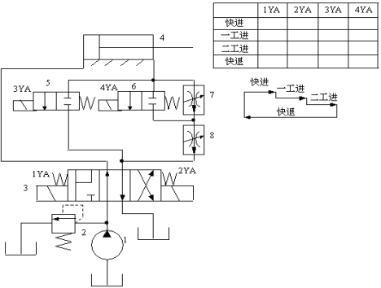
6、仔细阅读图示液压系统，填写电磁铁动作顺序表（一工进速度大于二工进速度）（通电“＋”，失电“－”）。答：电磁铁动作顺序表
1YA | 2YA | 3YA | 4YA | |
快进 | + | ― | + | ― |
一工进 | ― | ― | ― | + |
二工进 | ― | ― | ― | ― |
快退 | ― | + | + | ― |
7、如图所示三个液压缸的缸筒和活塞杆直径都是D和d，当输入压力油的
流量都是q时，试说明各缸筒的移动速度、移动方向。
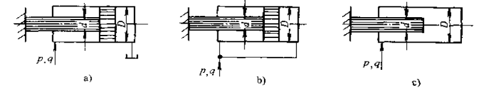
移动速度： 移动速度： 移动速度：
移动方向： 移动方向： 移动方向：
解：a），运动方向向左； b） ，运动方向向右； c），运动方向向右。
，运动方向向右； c），运动方向向右。
8、已知液压泵的额定压力和额定流量，若不计管道内压力损失，试指出图示各种工况下液压泵出口处的工作压力值。
a) b) c) d) e)
解：a） ； b）
； b） ； c）； d）； e）
； c）； d）； e）
9、如图所示系统可实现“快进→一工进→二工进→快退→停止（卸荷）”的工作循环，试填写电磁铁动作表（通电“＋”，失电“－”）。
解：电磁铁动作顺序表
1YA | 2YA | 3YA | 4YA | 5YA | |
快 进 | ＋ | － | ＋ | － | ＋ |
一工进 | ＋ | － | － | － | ＋ |
二工进 | ＋ | － | － | ＋ | ＋ |
快 退 | － | ＋ | ＋ | － | ＋ |
停 止 | － | － | － | － | ― |
注：一工进4YA得电、二工进3YA和4YA均失电也正确
10、指出图示回路为何种基本回路？并指出元件3和元件5的正确名称。）
基本回路名称：
元件3名称：
元件5名称：
解：图示为双泵供油回路。元件3是外控顺序阀；元件5是溢流阀。
11、图示系统，液压缸的有效面积A1=A2=100×10-4m2，缸Ⅰ负载FL=35000N，缸Ⅱ运动时负载为零，不计摩擦阻力、惯性力和管路损失，溢流阀、顺序阀和减压阀的调定压力分别为4MPa、3MPa和2MPa，求下列三种情况下A、B、C处的压力：（1）泵起动后，两换向阀处于中位；（2）1YA通电，缸Ⅰ运动时和到终端停止时；（3）1YA断电，2YA通电，缸Ⅱ运动时和碰到固定挡块停止运动时。
解：（1） , ；
, ；
(2) 运动时， ；
；
终点时 ,
,  ；
；
（3）运动时；
终点时, 。
。
12、仔细阅读图示液压系统，填写电磁铁动作顺序表（通电“＋”，失电“－”）。
解：电磁铁动作顺序表
1YA | 2YA | 3YA | 4YA | |
快 进 | ― | ― | + | + |
工 进 | + | ― | ― | + |
快 退 | ― | + | ― | + |
停 止 | ― | ― | ― | ― |
13、图中各缸完全相同，负载F2>F1，已知节流阀能调节缸速，不计其它压力损失，试判断图（a）和图（b）中哪个缸先动？为什么？哪个缸速度快？为什么？
解：a)和b)图中均为A缸先动；
两缸油路并联，面积相同时负载小者先动；
从理论上讲A、B缸速度相等。
a) b)
14、图示液压系统，要求先夹紧，后进给。仔细阅读系统图，完成电磁铁动作顺序表。（通电“+”，失电“－”）
解：电磁铁动作顺序表
1YA | 2YA | 3YA | 4YA | |
夹紧 | － | － | － | － |
快进 | － | + | － | + |
工进 | － | + | － | － |
快退 | － | － | + | + |
松开 | + | － | － | － |
15、如图所示的液压系统，可以实现“快进－工进－快退－停止”的工作循环要求，完成电磁铁动作顺序表。（通电“＋”，失电“－”）（6分）
解：
1YA | 2YA | 3YA | |
快进 | － | + | + |
工进 | + | + | － |
快退 | + | － | + |
停止 | － | － | － |
16、如图所示，请将一个中位机能为M型三位四通电磁换向阀和一个单向顺序阀分别填入图中相应的虚框内组成一个平衡回路，并连接好油路。
17、如图所示的多级调压回路中有几种压力？分别为多少?（负载无穷大）并指出每种压力对应的换向阀状态。
答：有三种压力。
1YA和2YA均不得电时，泵出口压力8 MPa；
1YA得电时，泵出口压力2 MPa；
2YA得电时，泵出口压力5 MPa。
18、图示系统可实现“快进→工进→快退→停止”的动作循环。试分析系统工作情况，填写电磁铁动作顺序表（通电“＋”，失电“－”）。
答：
电磁铁动作顺序表
1YA | 2YA | 3YA | 压力继电器 | |
快进 | ＋ | － | ＋ | － |
工进 | ＋ | － | － | ＋ |
快退 | － | ＋ | ＋ | － |
停止 | － | － | － | － |
19、图示两种形式的液压缸，活塞和活塞杆直径分别为D、d，如进入液压缸的流量为q，压力为p，
试分析两种情况液压缸产生的速度大小以及运动方向。
输出速度： 输出速度：
运动方向： 运动方向：
A） B）
答：A),向左； B) ,向右。
20、如图所示回路，溢流阀的调整压力为5MPa，减压阀的调整压力为1.5MPa， 活塞运动时负载压力为1MPa，其它损失不计，试分析：
⑴活塞在运动期间A、B点的压力值；
⑵活塞碰到死挡铁后A、B 点的压力值。
解：（1） 1MPa 1MPa
1MPa 1MPa
（2） 1.5MPa
1.5MPa  5MPa
5MPa
21、如图所示液控单向阀，试说明其组成和工作原理。
（1）指出以下零件的名称：零件③
零件④ 零件⑤ 零件⑥ 。
（2）工作原理：
答：（1）③阀芯 ④阀座 ⑤阀体 ⑥活塞
（2）工作原理：K口没有压力油时，A口油压力高可以推开阀芯从B口流出；反之，B口油压力高不能从A口流出。当K口有压力油时，A口油压力高可从B口流出, B口油压力高可从A口流出.
22、己知a)、b)所示回路参数相同，两液压缸无杆腔面积A1＝50cm2，负载FL＝10000N，各液压缸的调定压力如图所示，试分别确定两回路在活塞运动时和活塞运动到终点停止时A、B两处的压力。
答：
a)运动中，；终点停止时, ，
b)运动中，， ；终点停止时,
；终点停止时, 
1YA | 2YA | 3YA | 4YA | |
快进 | ||||
一工进 | ||||
二工进 | ||||
快退 | ||||
原位停止 |
23、分析图示液压系统，回答以下问题。
（1）写出元件2、3、4、5的正确名称：
元件2 ；
元件3 ；
元件4 ；
元件5 。
（2）一工进速度大于二工进速度，完成电磁铁动作顺序表。
答：（1）三位五通电液换向阀、外控顺序阀、直动型溢流阀、调速阀；
1YA | 2YA | 3YA | 4YA | |
快进 | + | － | + | － |
一工进 | + | － | － | － |
二工进 | + | － | － | + |
快退 | － | + | － | － |
原位停止 | － | － | － | － |
（2）
24、如图所示为单出杆液压缸的三种连接状态，若活塞面积为A1，活塞杆的面积为A3，当前两种状态图a）、b）负载相同，后一种状态图c）负载为零时，不计摩擦力的影响，试比较三种状态下液压缸左腔压力的大小。（6分）
答：a）； b）； c）。
25、分析如图所示系统，回答下列问题：（10分）
（1）指出下列元件的名称：
元件① ；
元件② ；
元件③ ；
元件④ ；
元件⑤ 。
（2）系统的形式是 ；系统包括： 回路、 回路、 回路和 回路。
答：（1）①单向定量泵②直动型溢流阀③三位四通换向阀（H型）
④单向顺序阀⑤单杆活塞缸；
（2）开式；调压、换向、卸荷、平衡。
26、图示系统可实现“快进→工进（1）→工进（2）→快退→停止”的动作循环，且工进（1）速度比工进（2）快。试分析系统工作情况，填写电磁铁动作顺序表（通电“＋”，失电“－”）。
电磁铁动作顺序表
解：
1YA | 2YA | 3YA | 4YA | |
快进 | + | － | + | － |
工进（1） | + | － | － | + |
工进（2） | + | － | － | － |
快退 | － | + | － | － |
停止 | － | － | － | － |
27、画出双泵供油回路．液压缸快进时双泵供油，工进时小泵供油、大泵卸载。请标明回路中各元件的名称。
答：元件1、元件2：双联液压泵（1－大流量、2－小流量）；
元件3：外控顺序阀；
元件4：普通单向阀。
正确画图
28、如图所示回路中，已知两活塞面积相同，A1＝20cm2，但负载分别为FL1=8kN，FL2=4kN，若溢流阀的调定压力py＝4.5MPa，分析减压阀调定压力pj分别为1MPa、4MPa时，两缸动作情况。
答：
当减压阀调定1MPa时，缸Ⅰ能够运动，缸Ⅱ不能运动。
当减压阀调定4MPa时，缸Ⅱ先运动，缸Ⅰ后运动。
29、图示系统能实现“快进→工进→快退→原位停止泵卸荷”的工作循环，试完成电磁铁动作顺序表，并指出其调速方式。（通电 “＋”，失电“－”）
解：
1YA | 2YA | 3YA | 4YA | |
快 进 | ― | ― | + | + |
工 进 | + | ― | ― | + |
快 退 | ― | + | ― | + |
停 止 | ― | ― | ― | ― |
其调速方式为：出油口节流调速。
30、试用液压泵、先导型溢流阀、两个远程调压阀、三位四通换向阀等元件组成一个三级调压回路，画出回路图并简述其工作原理。
解：正确画图
1YA、2YA均不得电，由主溢流阀决定泵出口处压力；1YA得电，由远控阀2决定泵出口处压力；2YA得电，由远控阀3决定泵出口处压力。
31、图示为顺序动作回路，分析图示回路，在图中正确表示出A、B缸的动作顺序并指出元件C和元件D的正确名称。
答：动作 1：A缸向右－动作；
2：B缸向右－动作；
3：B缸向左－A缸向左；
元件C、D：均为单向顺序阀。
32、图示系统可实现“快进→一工进→二工进→快退→停止”的工作循环，试列出电磁铁动作表（通电“＋”，失电“－”），并指出二位二通电磁换向阀的作用。
答：
1YA | 2YA | 3YA | 4YA | 5YA | |
快 进 | + | ― | + | ― | + |
一工进 | + | ― | ― | －/+ | + |
二工进 | + | ― | ― | +/－ | + |
快 退 | ― | ― | ― | ― | + |
停 止 | ― | ― | ― | ― | ― |
二位二通电磁换向阀的作用是使泵卸荷。
33、设计一简单液压系统使液压缸能水平方向左右运动，并能在任意位置停止，停止时液压泵处于卸
荷状态（用原理图表示）。
答：
34、仔细阅读图示液压系统，完成以下问题：
（1）指出下列元件的正确名称：
元件1： ；
元件2： ；
元件3： ；
元件7： 。
（2）完成电磁铁动作顺序表（一工进速度大于二工
进速度）（通电用“+”，断电用“―”）。
1YA | 2YA | 3YA | 4YA | |
快 进 | ||||
一工进 | ||||
二工进 | ||||
快 退 |
1YA | 2YA | 3YA | 4YA | |
快 进 | + | ― | + | ― |
一工进 | ― | ― | ― | + |
二工进 | ― | ― | ― | ― |
快 退 | ― | + | + | ― |
答：（1）单向定量泵、直动型溢流阀、三位四通电磁换向阀、调速阀；
（2）电磁铁动作顺序表
35、图中各溢流阀的调整压力为 ＞＞＞，那么回路能实现 级调压，并说明如何获得（例：当电磁铁均不得电时，泵出口压力为）。
＞＞＞，那么回路能实现 级调压，并说明如何获得（例：当电磁铁均不得电时，泵出口压力为）。
答：三级（1分）：两电磁铁都不得电时获得第一级；左边电磁铁得电时获得第二 级；右边电磁铁得电时获得第三级。
36、如图所示为单出杆液压缸的三种连接状态，若活塞面积为A1，活塞杆的面积为A3，当前两种状态图a）、b）负载相同，后一种状态图c）负载为零时，不计摩擦力的影响，试比较三种状态下液压缸工作腔压力的大小。
a) b) c)
解：1、a） ； b）
； b） ； c）
； c） 。
。
37、图示系统溢流阀调定压力为5MPa，减压阀调定压力为2.5MPa，试回答以下问题并说明各工况中减压阀口处于什么状态（工作或非工作状态）：1)当泵出口压力等于溢流阀调定压力时，夹紧缸使工件夹紧后，A、C点压力各为多少?2)当泵出口压力由于工作缸快进，压力降到1.5MPa时(工件原处于夹紧状态)，A、C点压力各为多少?3)夹紧缸在夹紧工件前作空载运动时，A、B、C点压力各为多少?(不计单向阀压力降)
（1）

减压阀阀口状态：
（2） 
减压阀阀口状态：
（3）

减压阀阀口状态：
答：（1），阀口关小/工作状态；
（2），，阀口全开/非工作状态；
（3） ,阀口全开/非工作状态。
,阀口全开/非工作状态。
38、仔细阅读图示液压系统，填写电磁铁动作顺序表（通电“＋”，失电“－”）。
解：
电磁铁动作顺序表
1YA | 2YA | 3YA | |
快 进 | + | ― | + |
工 进 | + | ― | ― |
快 退 | ― | + | ― |
停 止 | ― | ― | ― |
39、在图示系统中，
（1）当两溢流阀的调定压力分别为pyl = 6MPa，py2 =
2MPa，1YA通电和断电时，液压泵最大工作压力分别为多少？
（2）当两溢流阀的调定压力分别为py1 =2MPa，py2 = 6MPa，1YA通电和断电时，液压泵泵最大工作压力分别为多少？
解：（1）1YA断电时，pp=2MPa；1YA通电时，pp=2MPa；
（2）1YA断电时，pp=6MPa；1YA通电时，pp=2Mpa。
1、液压泵的流量q＝30L/min，吸油管直径d=25mm，液压泵吸油口距离液面高度h＝500mm。油液的运动粘度，油液密度，不计损失，求液压泵吸油口处的真空度。
解：取截面1-1、2-2列伯努利方程（在图中表示出两个截面）
因为
，
（正确列出两个截面上的参数）
液压泵吸油口真空度
2、如图所示进油节流调速回路，已知液压泵供油流量，溢流阀调定压力，液压缸无杆腔面积，负载，节流阀为薄壁孔口，其开口面积，，，求：
（1）活塞杆的运动速度；
（2）溢流阀的溢流量。
解：（1）
所以有
因此
（2）
3、已知液压泵输出压力,泵的机械效率，容积效率，排量，转速，液压马达的排量，机械效率，容积效率，不计管路中的损失，求:（1）液压泵的输出功率；（2）驱动泵的电动机功率；（3）液压马达输出转速；（4）液压马达输出转矩；（5）液压马达输出功率。
解：（1）液压泵的输出功率
（2）驱动泵的电动机功率
（3）液压马达的输出转速
（4）液压马达的输出转矩
（5）液压马达的输出功率
4、某液压泵的排量，输出压力,容积效率 ，机械效率，当转速为时，液压泵的输出功率 和驱动泵的电动机功率
和驱动泵的电动机功率 各为多少？
各为多少？
解：泵理论流量
泵实际流量
泵的输出功率
泵的总效率
电动机功率
5、某液压系统采用限压式变量泵供油(见图a)，液压泵调定后的特性曲线如图b所示，活塞面积m2，m2，求负载F=20kN时，活塞运动速度；活塞铁退时的速度(不考虑泄漏损失)
解：液压缸工作压力
查图知此时流量
所以
快退时负载为0，流量
所以
6、某液压马达的排量，供油压力,输入流量，液压马达的容积效率，机械效率，液压马达的回油背压为0，求：（1）液压马达输出转速；（2）液压马达输出转矩。
解：（1）液压马达的输出转速
（2），液压马达的输出转矩
7、图中，已知无秆腔活塞面积，液压泵的供油量，溢流阀的调整压力，问负载和时液压缸的工作压力p、液压缸的运动速度、溢流阀的溢流量各为多少?(不计一切损失)
解：时，液压缸工作压力 ；
；
溢流阀的溢流量；
液压缸运动速度；
，液压缸工作压力
（为5.4Mpa）
因为，所以；
液压缸运动速度
8、试设计一单杆活塞缸，要求差动连接快进速度是快退速度的2倍，其活塞直径D与活塞杆直径d的比值应为多少？（要求有完整的设计计算过程）
解：单杆活塞缸差动连接快进速度为
快退速度为
要求,有 （应为2d²＝（D²－d²））
所以（应为D/d＝30.5）
2、某液压泵输出压力p＝10MPa，转速n＝1450r/min，泵的排量Vp＝46.2mL/r，容积效率
ηv＝0.95，总效率η＝0.9。求驱动该泵所需电动机的功率P电和泵的输出功率P？
解：泵输出流量
泵输出功率
驱动迸的电动机功率
9、图示两个结构相同相互串联的液压缸，无杆腔面积,有杆腔面积，缸1输入压力,输入流量，不计损失和泄漏，求缸1不受负载时（F1＝0），缸2能承受多少负载？
解：
所以N
10、某液压泵转速n＝950r/min，排量，在额定压力29.5MPa和同样转速下，测得的实际流量为150L/min，额定工况下的总效率0.87，求：
（1）泵的理论流量；
（2）泵的容积效率和机械效率；
（3）泵在额定工况下所需电动机功率；
（4）驱动泵的转矩。
解：(1)泵理论流量
（2）容积效率
机械效率
（3）驱动泵电机功率
(4) 驱动泵转矩Nm
11、一柱塞式液压缸，缸筒固定，柱塞运动，柱塞直径为d=12cm，缸筒直径为D=24cm。若输入液压油的压力为p=5MPa，输入流量为q=10L/min，试求缸中柱塞伸出的速度及所驱动的负载大小（不计摩擦损失和泄漏）。
解：
12、如图所示圆管，管中液体由左向右流动，已知管中通流断面的直径分别是d1＝200mm和d2＝100mm，通过通流断面1的平均流速u1＝1.5m/s，求流量是多少？通过通流断面2的平均流速是多少？
解：
由得
13、已知某液压泵的排量为10 mL/r，额定压力为 10 MPa，设其机械效率0.95，容积效率0.9，试计算:
（1）液压泵转速为1500 r/min 时，其输出的流量为多少 L/min？
（2）该液压泵输出的功率为多少 kW？
（3）带动此泵工作的电机功率需多少 kW？
解：
14、图示两个结构相同、相互串联的双活塞杆液压缸，已知活塞面积直径为D, 活塞杆直径为d，两缸承受负载分别为F1、F2，流量为q，不计损失和泄漏，若泵的出口压力足够大(即两缸均可运动)，试求：p1 、p2 、v1和v2 。（8分）
解：
由
得
15、图示一个液压泵驱动两个结构相同相互串联的液压缸，已知两缸尺寸相同，缸筒内径D=80mm,活塞杆直径d=40mm，负载F1=F2=6000N，液压泵供油流量q=25L/min，求液压泵的供油压力p1及两个液压缸的活塞运动速度v1，v2。
解：

16、已知泵控马达的闭式系统，泵的排量和转速分别为125mL/r和1450r/min，马达的排量为250mL/r。 在泵工作压力为10 MPa时，泵和马达的机械效率和容积效率都分别为0.92和0.98。若不计回路损失，求：
（1）在该工况下，马达的转速和输出扭矩；
（2）在该工况下，泵的输入功率。
解：(1)泵理论流量
泵理论流量
马达转速
马达输出转矩:
（2）泵的输入功率
17、如图所示油管水平放置，截面1－1、2－2处的内径分别为d1＝5mm，d2＝20mm，在管内流动的油液密度ρ＝900kg/m3，运动粘度 =20mm2/s。若不计油液流动的能量损失，当管内通过的流量为18.84L/min时，求两截面间的压力差。（注：临界Re取2300）
=20mm2/s。若不计油液流动的能量损失，当管内通过的流量为18.84L/min时，求两截面间的压力差。（注：临界Re取2300）
解：
对截面1－1、2－2列伯努利方程
截面1－1 大于2300，为紊流，取
截面2－2 小于2300，为层流，取
所以
18、已知单杆活塞缸无杆腔和有杆腔的有效面积分别为A1＝40cm2，A2＝25cm2。若差动连接时能克
服的外负载F＝600N，活塞运行的速度为v＝0.2m/s，求不考虑损失时，液压泵的实际流量qp和
输出功率P。
解：由 得
由得
19、一液压马达，要求输出转矩为52.5N.m，转速为30r/min，马达的排量为105mL/r，求所需要的流量和压力各为多少（马达的机械效率和容积效率各为0.9）。
解：由 ，得
由,得
20、一马达的排量V=250mL/r，入口压力p1=100×105Pa，出口压力p2=5×105Pa，总效率η=0.9，容积
效率ηv=0.92，当输入流量为22L/min 时，试求：⑴马达的实际转速；⑵马达的输出转矩。
解：
21、如图所示，液压泵从油箱中吸油，吸油管直径d＝60mm，流量=150L/min，液压泵吸油口处的真空度为0.2×105Pa，液压油的运动粘度＝0.2×10－4m2/s，密度ρ=900kg/m3，不计任何损失，求最大吸油高度。
解：取截面1－1－、2－2列伯努利方程
截面1－1处：，，
截面2－2处：，，
所以
22、某液压泵的工作压力为10 MPa，排量为12mL/r，理论流量为24L/min，容积效率为0.9，机械效
率为0.8。求该液压泵的转速、输出功率、输入功率和输入转矩。
解：由 ，得
输出功率
输入功率
输入转矩
23、已知单活塞液压杆缸缸筒内径D=100mm,单活塞直径d=50mm,工作压力P1=2MPa,流量q=10L/min,回油压力P2=0.5MPa。试求活塞往返运动时的推力和往返运动速度。（8分）
解：
24、某液压马达的进油压力为10MPa，排量为200mL/r，总效率为0.75，机械效率为0.9，试计算：
（1）该马达能输出的理论转矩为多少？
（2）若马达的转速为500r/min，则输入马达的流量为多少？
（3）若外负载为200N•m（n＝500r/min）时，该马达输入功率和输出功率各为多少？
解： (1)
(2)
(3)，
25、某液压泵的排量为120mL/r，转速为1400r/min，在额定压力下工作，其额定压力为21.5 MPa，测得实际流量为155L/min，额定工作条件下的总效率为0.81。求该液压泵的理论流量、容积效率、机械效率、输到泵轴上的实际转矩。
解：
26、已知某液压马达排量，液压马达入口处压力,出口处压力，其总效率，容积效率，当输入流量时，
求：（1）液压马达输出转速；（2）液压马达输出转矩。
解：